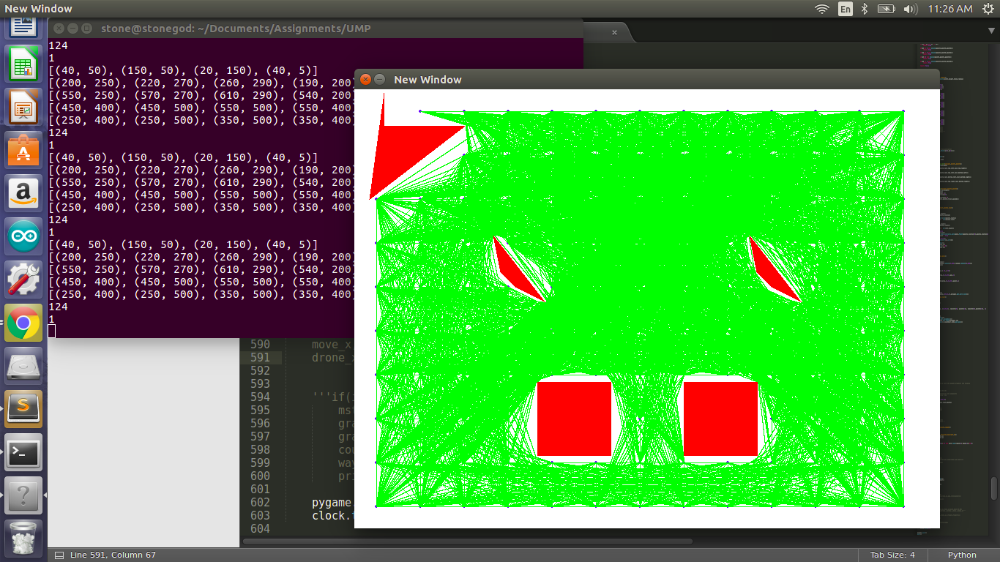
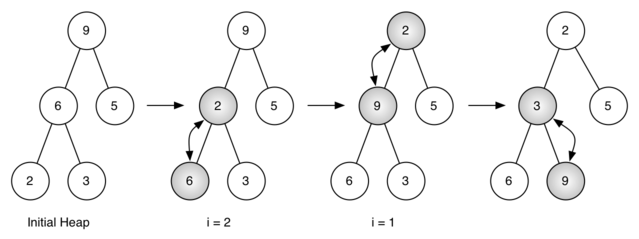
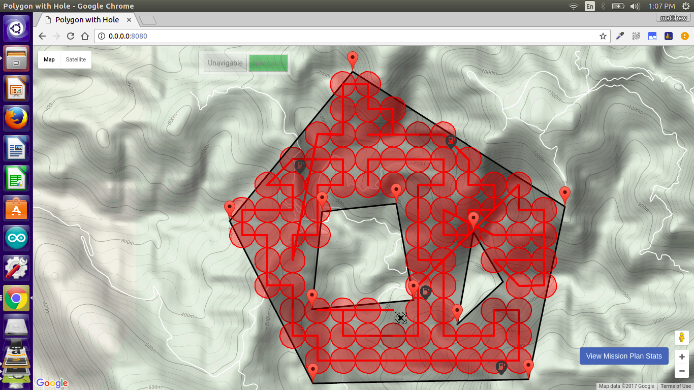
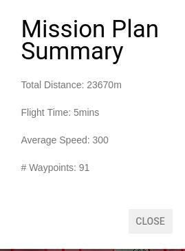

19.05.2017
Group Members
Unmanned Aerial Vehicles (UAV), commonly known as drones, are an emerging and rapidly expanding development in domestic surveillance technology. While drones are best known for their use in military operations, the use case for domestic surveillance does exist and is in fact expected to rise exponentially. Given the limited resources inherent in a drone, the lay person wishing to using one for this purpose will not know the most efficient flight path for maximum coverage of a given area, simply by looking.
As computer scientists who have participated in the construction and use of a small UAV, the members of the development group have first hand experience with what they would characterize as the prohibitive difficulty associated with its navigation. Effectively using remote controls to fly a drone from either one static point-of-view on the ground or the point-of-view of the drone are equally complicated due to necessitating a human having to make what would be on-the-fly decisions with respect to navigation.
An alternative to this would be to survey the area at a high level beforehand (for example, on a topographical map), plan a route by hand and then write a computer program with navigational commands to follow this plan. This last approach assumes that the lay person has the ability to plan an efficient route by hand as well as write low level computer programs. While such an occurrence is not impossible, it is unlikely that the majority of the general public is capable of doing this. This situation is what we would describe as a disconnect between users of the technology and desirable performance.
The UAV Mission Planner (UMP) aims to eliminate the disconnect between the lay person and maximum efficient coverage of an area with a small surveillance drone by computing a suitable flight path that achieves this.
The express benefit of UMP is the provision of another level of abstraction to the lay person aiming to use a drone for surveillance. This allows such a user the freedom to focus on the larger picture; a user of the system may concentrate on collection and analysis of the surveillance data with the knowledge that they were able to execute maximum coverage of the desired area, given the resources available.
Despite our intentions, in order to properly scope this project for a 13 week semester we decided to narrow focus on the user with a UAV, rather than simply a generic vehicle which was the initial intention. This allows us appropriately optimize the relevant path planning algorithms with the capabilities of a UAV mind, while ignoring the challenges associated with navigating on surface terrain. In scoping, we made no concessions for the specifications of a particular UAV; that is to say that the user is allowed to provide the specifications of their UAV by a combination of selecting among various options in lists and providing values for parameters in text boxes after which the algorithm will self-optimize to take advantage of same.
In its completed state, the system is currently capable of successfully doing the following:
While planning the details of the implementation, no alternative technologies were considered. The researchers were unable to find any user-facing software that accomplished the goals (specified in the Introduction as Accomplishments) that were determined at the outset. From this, we learned that in order to have a successful implementation, we would have to be influenced at a more granular level.
At such a level, we were able to first identify the problem as a coverage problem at large and consequently take cues from the Set Cover problem in constructing a solution. The Set Cover problem is a classical NP-complete problem that can be stated concisely as: given a set of elements {1, 2, … , n} (called the universe) and a collection S of m sets whose union equals the universe, the set cover problem is to identify the smallest subcollection of S whose union equals the universe. In the context of our problem, we needed to divide a given area into a subcollection of spheres (each representing the circumference formed by tracing the scanning radius of a UAV 360° about a point), leaving no space uncovered.
We were also able to recognize a navigation problem to be solved. To do this, we reduced the coverage problem above to a graph problem; a graph to be traversed efficiently. In this, we considered approximations to the Traveling Salesman Problem (TSP), distance vector routing algorithms, such as the Routing Information Protocol (RIP), as well as algorithms that produce a spanning tree as output, namely Prim’s algorithm and Dijkstra’s algorithm. We ultimately decided to pursue a spanning tree approach, after coming to realize that the level of complexity associated with implementing an approximation to the TSP was not appropriate for the scope of the problem. Distance vector routing algorithms also proved to be inappropriate due to the inordinate length of time that the graph can take to become stable.
Other relevant technologies that were used to complete the user facing side of the system include the Google Maps API that allows users to select the coordinates that bound the given area (called the bounded area polygon or BAP) as well as the Flask web framework that provides communication between the user facing interface and the system doing the heavy computation via a REST API.
Below is a flow diagram that illustrates the system at a high level.
In order to achieve the goals set out in the introduction, we had to divide the problem at large into a number of subproblems and solve each individually, combining the solution to each in the vein of divide and conquer. These subproblems include coverage and coordinate conversion, node placement, creating a connected graph, reducing the graph to a minimum spanning tree and navigating this tree.
For the coverage problem, we constructed a Cartesian projection from the set of geographic coordinates in the BAP, containing sub-areas that we call unnavigable areas (hereafter referred to as holes). The first challenge we encountered was being able to map these geographic coordinates to their more suitable Cartesian equivalent. The superior suitability of the latter type of coordinate was demonstrated by the greater ease with which they could be manipulated, owing to the numbers being whole as opposed to fractional. In doing this conversion, we managed to account for the curvature of the Earth and maintain the variance in the displacement between geographic coordinates by making use of the Haversine formula. In the end, we came up with two methods, which are discussed below.
Method 1
This first method achieved the elimination of the fractional part of the coordinate, which maintaining all the precision. The formula is given by
x = originx − geocoordx × widthp
y = originy − geocoordy × heightp
where originx is the x-coordinate of the top left corner of the Cartesian plane in geographical units (longitude), geocoordx is the latitude of the point under conversion, widthb is the width of the boundary polygon (as it appears on the map without any geometric transformations) in Cartesian units, and widthp is the width of the Cartesian plane as a multiple of the scanning radius of the UAV. It follows that variables with subscript y are longitude and the heights with b and p are of the boundary polygon and Cartesian plane respectively.
This conversion would produce something like this:
Figure 2: Bounded area selection by user
Figure 3: Cartesian projection
This method although suitable to some extent, prove to be imprecise. When converting from Cartesian back to geographic coordinates, it was discovered that the latitudinal coordinates were off by some degrees. The spheres in the screenshot shown below, the same subcollection mentioned in the description of the coverage problem, illustrate the coverage of the UAV in real time as it navigates the path provided. It is clearly seen that these spheres touch horizontally but not vertically, leaving uncovered space.
Figure 4: Screenshot showing real time drone navigation
This showed us that we did not account for the curvature of the earth in our calculations. We went back to the drawing board.
Method 2
By incorporating the Haversine formula in the calculation, we were comfortably able to achieve both the removal of the fractional part of the coordinate as well as account for the uneven curvature of the Earth that shows up in the variance of the latitudinal values. It does just this by using the haversine distance of two geographic coordinates to scale to cartesian space. The formula is shown below
x = haversine_distance((originx, originy), (originy, geocoordx)) × widthp
y = haversine_distance((originx, originy), (geocoordy, originx)) × heightp
where the haversine distance is given by d below:
x = sin2(ΔΦ/2) + cos(Φ1) ⋅ cos(Φ2) ⋅ sin2(Δλ/2)
d = R × 2 ⋅ atan2(√x, √(1 - x))
where originx is the x-coordinate of the top left corner of the Cartesian plane in geographical units (longitude), geocoordx is the latitude of the point under conversion, geocoordtr is a tuple of the latitude and longitude of the top right corner of the Cartesian plane, and widthp is the width of the Cartesian plane as a multiple of the scanning radius of the UAV in Cartesian units. It follows that variables with subscript y are longitude, originbl is of the bottom left of the Cartesian plane, and the height with p is of the Cartesian plane.
In the haversine formula, Φ and λ represent that latitudes and longitudes of the respective points and R is the radius of the Earth in kilometres.
As shown in the formula, the method takes each coordinate under conversion and finds the horizontal haversine distance (in metres) and the vertical haversine distance (in metres) from the origin which are then divided by the haversine distance of the width of the polygon and the haversine distance of the height of the polygon respectively. Both of which are then multiplied by the width and height of the cartesian place respectively which produces the x and y coordinate in cartesian space respectively.
The second problem involved trying to pack spheres constructed from the UAV’s scanning radius into the BAP filled with holes, the purpose of which is to use the centres of these spheres as nodes in graph. We devised two rules for packing these spheres: (i) no node (sphere center) should fall outside the region defined by the BAP and (ii) no node should fall inside any of the holes.
In order to achieve this, a boundary box of the BAP is created by restricting the Cartesian projection to the wider dimensions of the BAP; the widest width of the polygon is used as the width of the plane and the widest height as the height. The origin of the plane being at the top left corner.
For each node being placed, the x and y coordinates are calculated using the following formulae:
where n is the number of nodes that will be placed, i represents the ith node whose coordinates are being calculated from 0 to n iteratively, r is the scanning radius of the UAV, widthp is the width of the Cartesian place and heightp is its height.
After positions of nodes had been calculated, the challenge became determining which nodes to remove in order to stay in line with the rules we devised above. We did this in two steps:
Any node that doesn’t meet both conditions is removed. This was generalized to the problem of checking if a point resides inside or outside a polygon, for which two approaches were tried and one proved to be superior. Below we discuss both approaches.
Rectangle Method
The rectangle method reduces the problem of determining if a point is in any arbitrary polygon to one of determining if a point resides within a rectangle and this is done by first creating a bounding box of the polygon and checking if the position of the point in question is within the bounds of the rectangle which is shown in the formula below
min_x < x < max_x and min_y < y < max_y
As can be seen above the method works for point p1 but fails in the case of point p2 so it was clear from this another more accurate method was needed which led us to the method shown below.
Raycasting
This method entails making a projection, called a ray, from an arbitrary point in the plane to the point in question. Using the origin of the plane as this arbitrary point for every case, this ray is then checked for the number of intersections made with lines that form the BAP and any holes within. We found that when this ray made an odd number of intersections, it would overlap perfectly with that node acceptably fitting the two conditions necessary for node retention in the graph. When the number of intersections is even, the node would be removed. The diagram below shows this in action.
This serves a clear demonstration of the efficacy of the method. The method by which we checked for the number of times the lines intersected is a count of the number of positive results returned from check for the intersection of two line segments, which leverages the orientation of the line segments formed from the coordinates at the end points of the lines. The method for checking if two line segments intersect is shown below.
Intersection of Two Line Segments
Given a set of four coordinates forming two distinct line segments, the existence of an intersection between them can be determined by calculating what is known as the orientation a select group 3-permutation of points from the set. This can be illustrated with the following set of points {(1,5), (2,1), (6,1), (8,5)}, where (1,5) and (6,1) form the line segment (p1, q1) and (2,1) and (8,5) form the line segment (p2, q2) as shown below:
An orientation for a 3-tuple of points ((a1, a2), (b1, b2), (c1, c2)), where the first two points are taken from the same line segment and the third is taken from the other, is given by the formula below:
Orientation = (b2 − a2) ⋅ (c1 − b1) − (b1 − a1) ⋅ (c2 − b2)
In each 3-permutation where the first two points come from the same line segment (there are two of these), the orientations are compared for sameness. An orientation of this type may be positive, negative or zero and sameness is defined as two orientations both being one of these at the same time. A result of this comparison is determined same or different.
What follows this is that these calculations will yield two comparisons and we consider two such comparisons both having a result of different as constituting an intersection of line segments. Any other combination (two same or one different and one same) constitute no intersection.
Furthering the illustration above, the orientations are shown below:
(p1, q1, p2) = 16
(p1, q1, q2) = −28
These orientations are different.
(p2, q2, p1) = −28
(p2, q2, q1) = 16
These orientations are also different. And thus, these line segments constitute an intersection.
Having obtained a suitable set of nodes, the overarching problem could now be reduced to one of simple graph traversal. We now needed to represent the nodes as a graph that could be so traversed and a Minimum Spanning Tree (MST) reduction of this graph is what we determined could best provide this representation. In order to do this, a complete graph was created from the nodes positioned earlier by creating edges between them internally; analogous to paths along which a UAV might navigate. Care was taken to ensure that the edges in the graph did not intersect with any holes within the BAP, or the edges of the BAP itself in the case where its shape was convex and it had indented sides, by using the method shown above. A naive implementation (nested loops) of that algorithm proved to be in the order of O(|V|2), where V is the collection of nodes in the graph.
The computational time complexity of the algorithm was improved slightly with minor changes to the algorithm, although still in the order of O(|V|2), it was scaled down by making sure not to check nodes that have already been added. An edge is represented by a 3-tuple (N1, N2, d), where N1 and N2 are nodes and d is the edge cost between them in Cartesian units. Since it is an undirected graph, the edge (A, B, d) is equivalent to (B, A, d). This was done by checking if the index of the node in the inner for loop is greater than the one in the outer for loop before continuing computation. An example is shown below.
Figure 9: Screenshot showing the complete graph
From the connected graph a minimum spanning tree was calculated. The minimum spanning Tree was calculated using Prim’s algorithm. Prim’s is a greedy algorithm which finds a subset of edges that forms a tree that includes every vertex where the total weight of all the edges in the tree is minimized
The algorithm may informally be described as performing the following steps:
The time complexity of Prim’s depends on the data structure used. At first an adjacency matrix was used, which was then switched out for the more efficient Binary Heap data structure. Test results of utilizing both is shown in the table below.

Figure 10: Minimum spanning tree
Figure 11: Illustration of the binary heap
Table showing results of MST calculation
| # of Nodes | 10 | 100 | 500 | 1000 |
|---|---|---|---|---|
| Adjacency Matrix | 0.01238823 s | 0.0023858 s | 953.415 s | - |
| Binary Heap | 0.00289297 s | 0.00388 s | 9.79 s | 39.74 s |
From the results it can be seen that an adjacency matrix performs well for small number of nodes but when the number of nodes approach large numbers, it can clearly be seen that utilizing a binary heap for the data structure for Prim’s improves computation time by a lot which runs in O(|E| log |V| ) compared to the adjacency matrix which runs in O(|V|2)
With the above achieved, the problem is now reduced to a question of how the UAV will navigate this MST in an efficient manner, touching every node at least once. The algorithm below outlines a solution.
The algorithm starts out with a greedy approach choosing neighbours with the shortest path cost. Being a spanning tree, it reduces the search space by a large amount. The algorithm tries to choose neighbours that has less unvisited neighbours, this is so as to allow the agent to search the fringes of the graph before continuing onwards. Using Euclidean as a heuristic helps the agent to find the closest unvisited nodes if all the neighbours have been visited. The A* algorithm is guaranteed to find the shortest path to that node. Due to the restriction in possible paths to move in a minimum spanning tree, a problem arose where the agent must take non-optimal routes and revisit nodes to get to an unvisited node which is why the decision was made to recompute the MST after reaching a leaf node removing visited nodes. This allowed for better paths to be created and reduced the need for the agent to go over already visited nodes.
An edge case arose whereby after removing visited nodes except for the current node, the current node and other unvisited nodes would be left orphaned because their only neighbours were nodes that were removed. To compensate for this,nodes that were removed were re-added up until all the orphaned nodes had some connection to the graph itself.
[(18.018813622629377, -76.70525550842285), (18.006814909120497, -76.71564102172852), (17.993754156537484, -76.70860290527344), ( 17.994080687140823, -76.6904067993164), ( 18.007957678939725, -76.68731689453125)]
Hole 1
[(18.00754954771195, -76.70783042907715), ( 17.999713244899084, -76.70868873596191},(18.000447913083534, -76.70010566711426), ( 18.008202557222763, -76.70156478881836)]
Hole 2
[(18.00591701335071,-76.69504165649414), ( 17.99848879112336, -76.69641494750977), (18.001917240269684,-76.69255256652832)]
[(293, 0), (0, 356), (198, 744), (712, 734), (800, 322)]
[(18.00971946154764, -76.70183300975889), (18.00971946154764, -76.70395731928653), (18.01174038623247, -76.70395731928653), (18.01174038623247, -76.70183300975889), (18.01174038623247, -76.69970870023488), (18.01174038623247, -76.69758439071505), (18.00971946154764, -76.69758439071505), (18.00971946154764, -76.69970870023488), (18.007698536862815, -76.69970870023488), (18.005677612177987, -76.69970870023488), (18.003656687493155, -76.69970870023488), (18.003656687493155, -76.69758439071505), (18.00163576280832, -76.69758439071505), (17.99961483812349, -76.69758439071505), (17.997593913438664, -76.69758439071505), (17.997593913438664, -76.69546008119998), (17.997593913438664, -76.69333577169023), (17.99961483812349, -76.69333577169023), (17.99961483812349, -76.69121146218633), (17.997593913438664, -76.69121146218633), (17.995572988753832, -76.69121146218633), (17.995572988753832, -76.69333577169023), (17.995572988753832, -76.69546008119998), (17.995572988753832, -76.69758439071505), (17.995572988753832, -76.69970870023488), (17.995572988753832, -76.70183300975889), (17.995572988753832, -76.70395731928653), (17.995572988753832, -76.70608162881724), (17.995572988753832, -76.70820593835047), (17.997593913438664, -76.70820593835047), (17.997593913438664, -76.71033024788565), (17.99961483812349, -76.71033024788565), (18.00163576280832, -76.71033024788565), (18.00163576280832, -76.71245455742225), (18.003656687493155, -76.71245455742225), (18.005677612177987, -76.71245455742225), (18.005677612177987, -76.71457886695967), (18.007698536862815, -76.71457886695967), (18.007698536862815, -76.71245455742225), (18.007698536862815, -76.71033024788565), (18.00971946154764, -76.71033024788565), (18.00971946154764, -76.71245455742225), (18.01174038623247, -76.71033024788565), (18.01174038623247, -76.70820593835047), (18.01174038623247, -76.70608162881724), (18.00971946154764, -76.70608162881724), (18.00971946154764, -76.70820593835047), (18.007698536862815, -76.70820593835047), (18.005677612177987, -76.70820593835047), (18.005677612177987, -76.71033024788565), (18.003656687493155, -76.71033024788565), (18.013761310917307, -76.70820593835047), (18.013761310917307, -76.70608162881724), (18.01578223560213, -76.70608162881724), (18.017803160286963, -76.70608162881724), (18.017803160286963, -76.70395731928653), (18.01578223560213, -76.70395731928653), (18.01578223560213, -76.70183300975889), (18.013761310917307, -76.70183300975889), (18.013761310917307, -76.70395731928653), (18.013761310917307, -76.69970870023488), (18.013761310917307, -76.69758439071505), (18.01174038623247, -76.69546008119998), (18.00971946154764, -76.69546008119998), (18.00971946154764, -76.69333577169023), (18.007698536862815, -76.69333577169023), (18.007698536862815, -76.69546008119998), (18.005677612177987, -76.69546008119998), (18.005677612177987, -76.69758439071505), (18.007698536862815, -76.69758439071505), (18.005677612177987, -76.69333577169023), (18.005677612177987, -76.69121146218633), (18.005677612177987, -76.68908715268887), (18.003656687493155, -76.68908715268887), (18.003656687493155, -76.69121146218633), (18.003656687493155, -76.69333577169023), (18.00163576280832, -76.69121146218633), (18.00163576280832, -76.68908715268887), (18.007698536862815, -76.68908715268887), (18.007698536862815, -76.69121146218633), (18.00971946154764, -76.69121146218633), (18.00163576280832, -76.69970870023488), (17.99961483812349, -76.69970870023488), (17.997593913438664, -76.69970870023488), (17.997593913438664, -76.70183300975889), (17.997593913438664, -76.70395731928653), (17.997593913438664, -76.70608162881724), (17.99961483812349, -76.70608162881724), (17.99961483812349, -76.70820593835047), (17.99961483812349, -76.70395731928653), (17.99961483812349, -76.70183300975889)]
Red circles represent the sensing radius of the UAV and the red lines represent the path the drone took. There is also a summary page that shows total distance, total time and number of waypoints.
Figure 12: Screenshot of real time UAV navigation
Figure 13: Screenshot of the mission plan summary
The researchers consider the overall execution of the system a success. The problem, as it was defined at the outset, was conclusively solved. We were able to provide a user friendly interface for computing an efficient path that completely covers a bounded area within resource constraints. In doing so, we learned a raft of the intricacies involved with optimizing graphing algorithms, as well as discovered the solutions to problems previously unknown (to us). Some of these include an approximation to the Traveling Salesman Problem, the Set Cover Problem, the ray casting method and the intersection of two line segments, as well as efficiently navigating a minimum spanning tree. We were able to grow as a team, as we debated fruitfully the merits and demerits of particular approaches to a given solution, as well as learn from each other; specific team members proved to be gifted in one area or another that was relevant to the development of the system and in the end we all improved collectively as a result.
We made the decision to run the algorithm offline in order to take full advantage of the computational range of a desktop server to boost efficiency and consequently the system is unable to operate in dynamic environments. Such an operational capacity is a potential extension to the system.
The system also operates with a single UAV as the navigating agent due to time constraints. This could be extended to incorporate multiple UAV’s by splitting the complete graph into multiple disjoint graphs, each to be navigated by a separate UAV.
While multiple improvements were made to the solution of the conversion and coverage problem, in the end we were still unable to have 100% perfect coverage of the BAP in the Cartesian projection translated back to real world coverage. An improvement to the conversion of these units and node placement may lead to better real world coverage. An example of this is an under representation of the UAV’s scanning radius in order to have more nodes, at the expense of less efficient navigation.